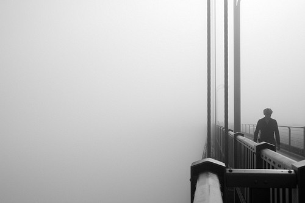
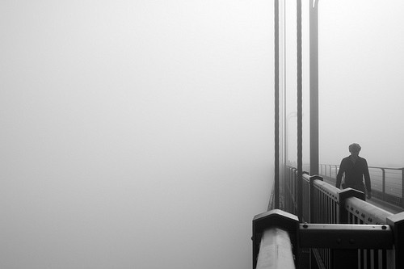

Photography is the art and practice of capturing images using a camera. It involves recording light and colors to create pictures of people, places, objects, or moments. The camera captures what we see and turns it into a photo, which helps preserve memories and important events. Photography allows us to share stories, express creativity, and communicate ideas visually. Whether it's a beautiful landscape, a special event, or everyday life, photography helps us remember and connect with the world around us in a unique way. It can also be used as a tool for art, journalism, and personal expression.
With excellent autofocus, image quality and video features, the Sony A7 IV is every bit the modern mirrorless hybrid.
View DetailsWith a compact build, good handling and modern autofocus, the Canon EOS R10 represents excellent value for beginners.
View DetailsWith a huge pixel count and superb autofocus, the flagship Sony A7R V delivers outstanding stills when paired with a top-tier lens.
View DetailsIf you can look past its limited range of native lenses, the EOS R7 is a fast, powerful camera that handles well and shoots excellent stills.
View DetailsLovely to shoot with, the OM-1 II delivers versatile performance with its 20MP stacked sensor and unique computational modes.
View DetailsWith a fixed focal length that’s perfect for street photography, the Fujifilm X100V is a premium compact with plenty of retro style.
View DetailsIt’s not cutting-edge, but a compact body, excellent image stabilization and handy touchscreen make this a great value option.
View DetailsNikon's last remaining DSLR with APS-C sensor is an excellent all-rounder with 20.9MP still, superb battery life and intuitive handling.
View DetailsA showcase of motion blur photos. Motion blur is frequently used to show a sense of speed. You can artificially achieve this effect in a usual scene using cameras with a slow shutter speed. Also Adobe Photoshop can be used for this purpose, though sometimes images may look unnatural and unprofessional.
Framing is a popular compositional technique that involves using elements of a scene to create a frame around your subject. This may serve to emphasise your subject, but can also provide context and help you tell a story through your image.
You can use lines to draw attention to the main subject of interest in your photograph, and they’re also an excellent way to create a sense of depth and lead the viewer’s eyes through an image.
Filling the frame is the opposite of using negative space, and requires you to get in as close as possible to your subject. This technique blocks out any potential distractions in an image and can be especially useful if you’re trying to photograph something in front of a busy or cluttered background, whether it’s a messy kitchen or a crowded living room.
Contrast can also be used in composition, because including contrasting elements in a photograph allows you to make a stronger visual impact. The most common types of contrast you’ll encounter in photography are tonal contrast and colour contrast, but contrast can also be added to a photograph in the form of textures and shapes.

Depth of field can also change the composition of your images and turn an average snapshot into something more artistic and eye-catching. Playing with depth of field allows you to clearly define the foreground and background, and dictate what the viewer will focus on.
Shadows can be used in photography to employ many of the composition techniques we already discussed, for example to add depth, texture and contrast to an image. They can also help you draw attention to specific points in your photos or add a sense of drama or mystery.
This photography technique starts before the shot is even taken. In this article you’ll find some quick tips on what to look for to ensure the perfect black and white landscape – e.g. camera settings for black and white photography and what filters are good for black and white landscapes.


 
